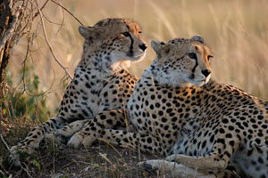

Fundación Corazon Silvestre
Nuestro compromiso como Fundación
En Corazón Silvestre, nos dedicamos a proteger y conservar animales domésticos y silvestres. Creemos en el poder de la educación para generar conciencia, por eso realizamos talleres en escuelas y comunidades sobre el respeto hacia los animales. También impulsamos campañas de adopción responsable y esterilización para asegurar que cada mascota tenga un hogar adecuado. Trabajamos activamente en la preservación de hábitats naturales para especies silvestres, y fomentamos la participación comunitaria y el voluntariado, porque sabemos que juntos podemos hacer una gran diferencia.
Apoya nuestra misión
Colabora con nuestra causa de proteger a todo tipo de animales, tanto salvajes como domésticos
¡Ven a nuestra oficina y ayudanos a ayudar!
CONTÁCTANOS: 0414-9896615 a través de llamada o WhatsApp
Protege una especie en peligro de extinción

Nos esforzamos en la conservación de las especies silvestres, especialmente en las que están en peligro de extinción